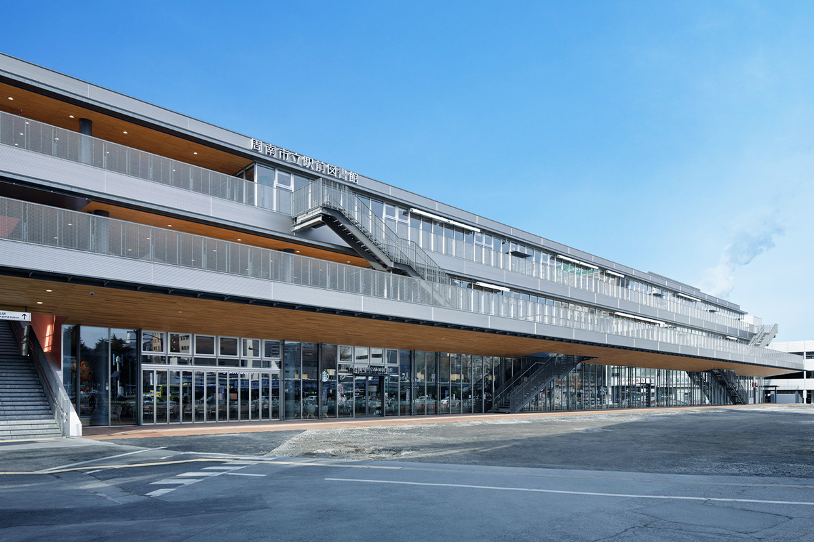
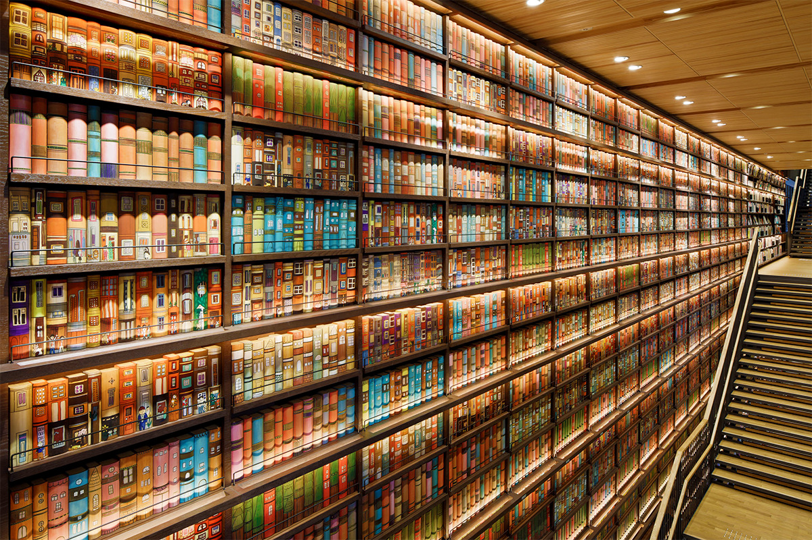
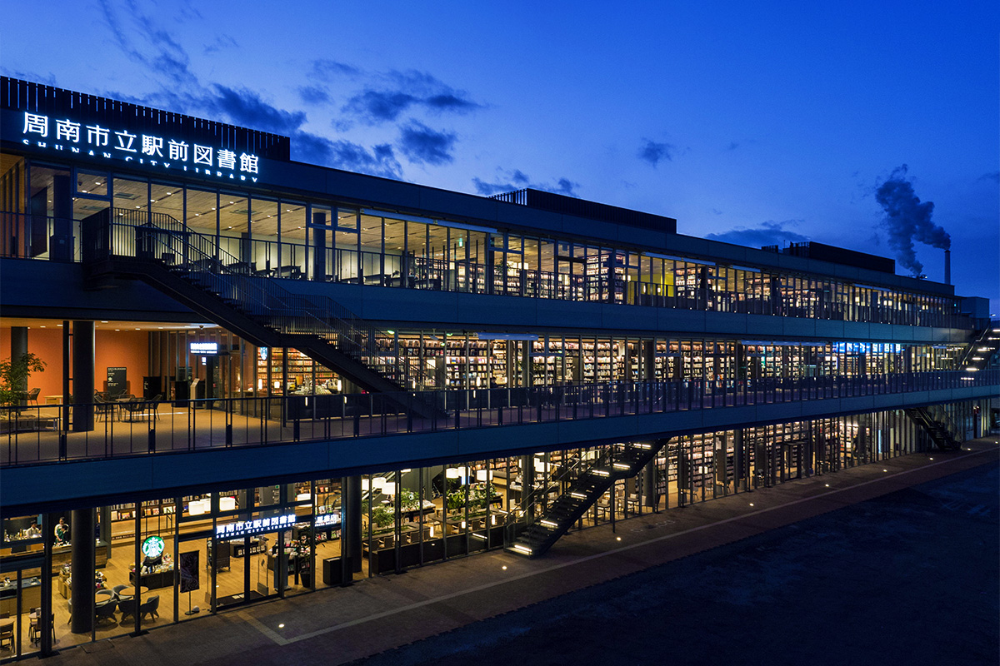
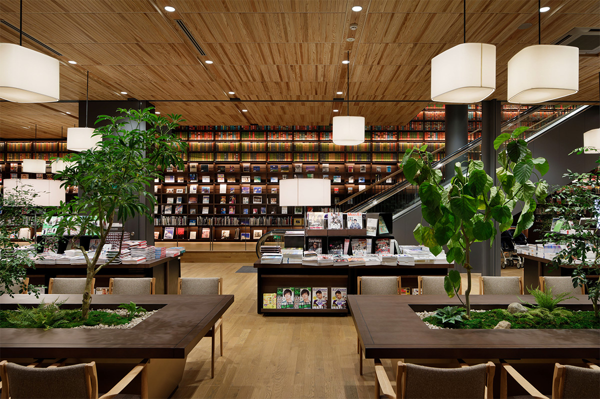
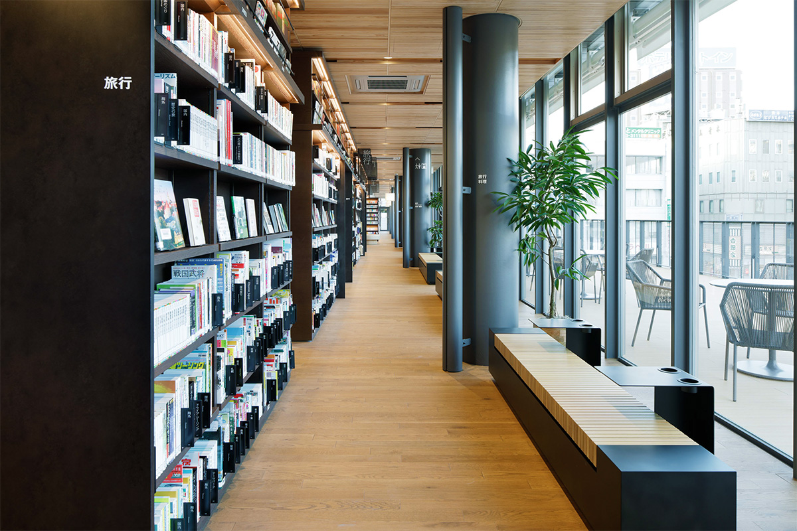
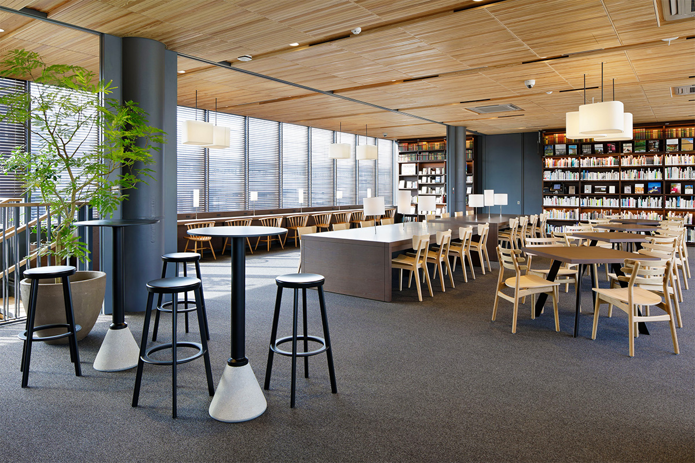
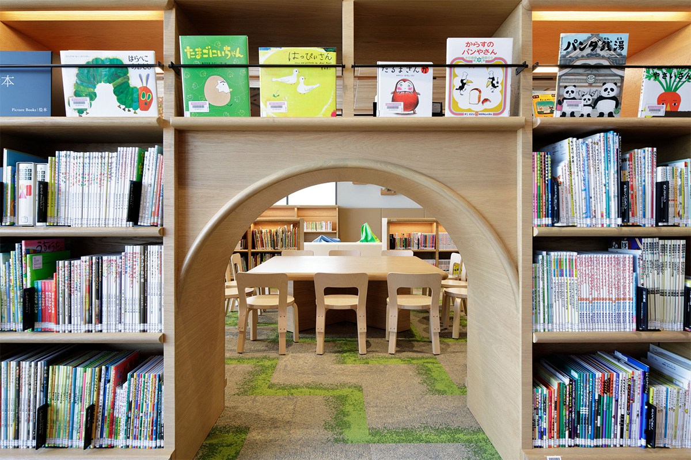
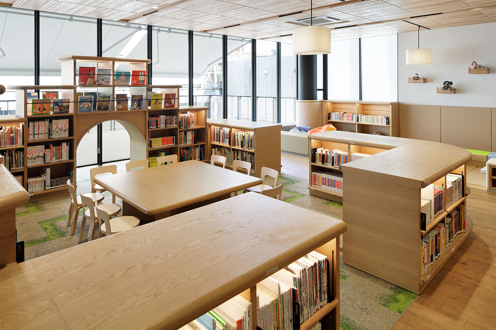

Префектура Ямагути · Сюнан · архитектура
Библиотека у станции Токуяма: книжная стена в девять метров и «гостиная города» Хироси Найто

Выйдя из северного выхода станции Токуяма, можно сразу попасть в библиотеку. Её спроектировал Хироси Найто, один из самых известных архитекторов Японии, и задумал как гостиную для всего города: здесь читают, работают, пьют кофе и ждут поезда.
Город
Место, где можно встретить себя будущего
Сюнан лежит на юго-востоке префектуры Ямагути, на берегу Внутреннего Японского моря. Это промышленный город: рядом с крупным международным портом стоят заводы тяжёлой и химической промышленности. Парадный вход в город это станция Токуяма, и прямо перед ней в феврале 2018 года открылась городская библиотека. Она стала главной частью нового общественного центра, который построили, чтобы оживить старый центр Сюнана.
Девиз библиотеки звучит так: «Место, где можно встретить себя будущего». Её создатели хотели, чтобы здесь находили себе занятие самые разные люди: приезжие и те, кто уезжает, вернувшиеся домой и местные завсегдатаи. Кто-то ищет тишины, кто-то компании, кто-то книгу о прошлом города, а кто-то повод задуматься о собственном будущем.
Библиотека работает 365 дней в году и открыта до 22:00. Из примерно 550 мест около 130 оборудованы розетками, есть беспроводной интернет. В том же здании работают книжный магазин «Цутая» и кофейня «Старбакс». Сюда приходят заниматься и читать, а путешественники заглядывают передохнуть между поездами.
Искусство
Книжные полки до самого потолка

На лестнице, которая ведёт от входа в книжный магазин на первом этаже ко второму, открывается двусветное пространство высотой около 9 метров и шириной около 18 метров. Всю стену до потолка занимает панно в виде книжных полок. На корешках нарисованы дома и люди, которые в них живут. Смысл тот же, что и у всего здания: город держится на разнообразии его жителей и их образа жизни.
Основу панно составили рисунки художника из мастерской местного центра поддержки людей с инвалидностью. Его работы вручную перенесли на стену, корешок за корешком.
Вечером стену подсвечивают, и свет полок видно с улицы. Вместе с огнями соседних заводов он становится частью ночного пейзажа Сюнана. Место любят фотографы, и снимок отсюда станет хорошей памятью о поездке. Фотографировать можно только в этой зоне: в самой библиотеке съёмка, как правило, запрещена.
Архитектура
«Гостиная города» Хироси Найто

Трёхэтажное здание соединено с северным выходом станции Токуяма. Его спроектировал Хироси Найто, автор Морского музея, вокзала Коти и станции Сибуя линии Гиндза токийского метро.
Первое, что бросается в глаза, это терраса длиной около 120 метров вдоль привокзальной площади. С неё виден весь квартал, а люди на террасе видны с улицы, и прохожие сразу чувствуют, что здание живёт. Террасы есть на каждом этаже, и вместе с тёплым деревом они складываются в трёхслойный «мильфей». Пространство террас смягчает свет, поэтому в залах он рассеянный и мягкий. Крыша приподнята к улице, чтобы снаружи был виден деревянный потолок. Таких продуманных деталей в здании много.
«Здание смотрит на север, прямого солнца здесь нет. Поэтому я решил открыть его городу и сделать что-то вроде гостиной для всего города»
Хироси Найто, архитектор
Внутри много дерева, и уютно становится уже у входа. Стены почти целиком стеклянные, граница между улицей и залом едва заметна: можно выйти на воздух передохнуть от чтения и так же легко вернуться. По залам рассыпаны яркие цвета, но подобраны они в одной гамме, и именно по ним здание запоминается.


Каждый этаж живёт своей жизнью. Внизу шумнее, здесь встречаются и общаются, выше становится тише.

Для детей устроена отдельная библиотека с детскими книгами и книжками с картинками. Она отделена от остальных этажей, поэтому шуметь и играть здесь можно свободно. Родители читают вместе с детьми, а сотрудники библиотеки регулярно устраивают громкие чтения.


Библиотеку построили, чтобы вернуть жизнь в центр города, и удобные уголки для самых разных людей здесь на каждом шагу. Обращайте на них внимание и не спешите: здесь хорошо просто посидеть и отдохнуть. Тем, кто едет на машине, подойдёт западная парковка у станции на 125 мест.
Библиотека у станции Токуяма
- Адрес
- префектура Ямагути, Сюнан, Миюки-дори, 2-28-2
- Телефон
- +81 834-34-0834
- Часы работы
- 9:30–22:00
- Выходные
- без выходных